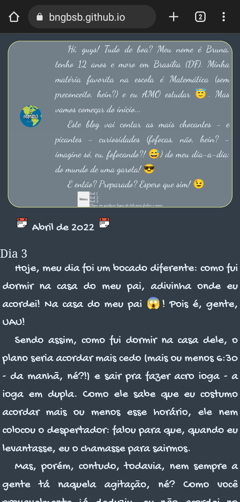

Hi, guys!
Tudo de boa? Meu nome é Bruna, tenho 13 anos e moro em Brasília (DF). Minha matéria favorita na escola é Matemática (sem preconceito, hein?) e eu AMO estudar 😇. Mas vamos começar do início...
Este blog vai contar as curiosidades (fofocas, não, hein? - imagine só, eu, fofocando?! 😅) e novidades do meu dia-a-dia: do mundo de uma garota! 😎
E então? Preparado? Espero que sim! 😉
link 1
link 2
link 3
Clique em qualquer lugar da tela para fechar o menu
Outubro de 2022
Dia 4
Oi oi oi!!! Sentiram falta?
Hoje é uma terça-feira. Estou na casa da minha vó.
[Pode rir. Às vezes acho impressionante a minha capacidade de formar longas e complexas frases, também]
Cortei o cabelo hoje e, sem querer ser presunçosa, estou muito feliz com o resultado. Eu não fiz nada demais, na verdade; A única mudança de verdade que aconteceu foi eu cortar um franjão (para leigos: franja que não é na testa, mas na altura do queixo). Eu estou realmente diferente porque a moça que cortou o meu cabelo fez tipo um agradinho: escovou ele. Estou com medo de como ele vai ficar depois que eu lavar.
Acho que não tem nada mais para falar. Talvez seja um pouco falta do que fazer, mas eu mudei a minha foto de perfil do WhatsApp de novo rsrsrs. Isso porque eu estava dando um merecido limpa no meu celular (o bichin já tava travando de tão cheio) e, no meio dos 50 milhões de arquivos aleatórios, eu achei ela. Eu estou distraidamente (ou pelo menos fingindo que é distraidamente) andando em frente ao Museu Nacional da República, uma construção linda aqui de Brasília que parece Saturno, só que é só a metade da esfera e é branco. Sério, eu acho muito top a arquitetura de Brasília.
Mudando de assunto: todas as pessoas que me conhecem de verdade sabem que meu grupo de música preferido é Blackpink - coreano, canta também em inglês e faz parte do kpop. Na verdade, é considerado pela maioria das pessoas o maior grupo de kpop feminino que existe. Já é um tanto antigo - o debut (data de fundação do grupo) delas foi em 2017, então fazem parte da 3ª geração, enquanto já temos a 4ª aí.
Por que estou falando isso: não cheguei a comentar aqui, mas elas lançaram um novo álbum (chamado "Born Pink", ou, em português, Nascido Rosa, apesar do "nascido" poder variar em gênero e número, só porque o inglês é uma língua muito bipolar) e a coincidência enorme é que foi NO DIA DO MEU ANIVERSÁRIOOOOOOOO!!!!!!!!!!!! Para quem não sabe, fiz anos no dia 16 do mês passado.
Setembro de 2022
Dia 19
Só para complementar o que eu tinha dito ontem: o meu aniversário foi essa semana (ou semana passada, seja como for). Estou muuuuuuuuito feliz!!!
Minha mãe preparou uma festinhaa em nossa casa e ficou muito fofinho! Amei...
Só pra terminar: sabe as imagens que eu coloquei no final do dia de ontem? O que acontece é que, lá em cima, tá escrito dia 19 de set (setembro). Isso porque eu tirei elas hoje rsrsrs 😅. Não estranhem. O arquivo que eu tinha colocado ontem quebrou, então tive que fazer de novo.
Como de costume, vou anotar o que preciso fazer em seguida:
Dia 18
Hello, hello, people! Tudo de bom?
Era pra ser "amanhã", mas acabou que ficou "semana que vem", né? Sorry 🤭
Enfim... Como eu estava falando. Semana passada eu saí para o Salto Corumbá e, sério, foi muito massa. Nós andamos bastante por lá. A cachoeira principal (tem 7 no parque todo) é simplesmente LINDA, mas tem a água muito muito muito gelada. Pessoalmente, como tenho miuto problema com frio, eu não entrei pra valer, só sentei no chão de pedrinhas dentro do que parece um laguinho, deixando a água sobir até pouco acima da cintura. Vimos algumas pessoas por lá, também, mas elas não nos incomodaram e (eu espero) nós não incomodamos elas. Foi muito bom.
Apesar de ser um programa de contato com a natureza, o parque em si é bem estruturado - tem piscinas, dois restaurantes, sorveteria, calçada nas parte que não são trilhas etc. Gostei de lá.
Fiz umas alterações no CSS da página, então o resultado foi:
Dia 11
Oi de novo kkkkkk tudo bem?
Agora são exatamente 9h da manhã e daqui a pouco vou sair de casa para ir ao Salto Corumbá. Dormi com meu pai hoje. Tive uma noite muito boa, muito bem, obrigada. Sem disposição para formar frases logas hoje. O download da alma ainda não terminou. Calma.
Voltando às novidades: tenho feito várias olimpíadas que aparecem pela minha frente (em sua maioria, de Matemática), e inclusive tava fazendo uma ontem. O nome dela é Olimpíada nacional de Ciências (ONC) - bem criativo - e eu tive muita sorte de fazê-la, porque, na verdade, eu tinha feito a primeira fase e classifiquei para a segunda. Mas a sorte não foi essa. Foi que ninguém avisou nada sobre isso - eu tive aula de Ciências na sexta (hoje é domingo) - e, por acaso, eu abri o meu email da escola para conferir se eu tinha recebido alguma nota de alguma prova ou coisas do gênero. Aí eu vi o email de um funcionário de lá falando que eu tinha classificado e tinha até HOJE (no caso, ontem) para fazer a prova.
Conferi o horário - 10 para o meio-dia. Com certeza não ia dar tempo para fazer a prova antes do almoço, mas dava tranquilo para fazer depois, considerando que o resto da tarde eu tinha livre. Ok.
Almoçamos, eu e meu pai. Sentei para fazer a olimpíada às 14h. Comecei a fazer às 14:13. Lembro do horário exato porque eu passei muito, muito aperto.
A prova tinha duas horas de duração, mas eu passei meia hora na primeira de dez. Talvez, se eu pudesse pulá-la e voltar nela depois, eu teria conseguido fazê-la, mas o problema é que eu não podia. Eu fiquei com tanto ranço de eu não poder pular a questão que eu acho que perdi a cabeça, e, na hora, foi um alívio, mas depois fiquei com um sentimento de culpa de ter deixado a primeira questão da prova em branco. Acho que acontece com as pessoas (ou espero, porque eu nunca tinha feito isso antes - que eu me lembre).
O site me mostrou o tempo da prova. Como já falei, tinha ficado meia hora na mesma questão. Comecei a entrar em desespero. Entrei em uma corrida louca contra o tempo e, quando falo que terminei em cima, falo literalmente. Terminei seis minutos, repito, SEIS MINUTOS antes do tempo regulamentar esgotar. Se você for bom de conta ou estiver pensando nela, como eu faria, saberá que eu terminei a prova às 16:07. Ufa! Foi tenso. Mas, como tudo, passou, e eu sobrevivi; Até aí está ótimo.
Parei para ler o que escrevi - parece bom, mas tive que corrigir uns errinhos com escrever antes com dois s. Acho que a olimpíada foi a maior emoção da semana. Agora não posso mais falar - tenho que ir, e talvez só volte amanhã. Tchau!
Dia 10
Volteiiiiiii!
Tirei um tempo (que acabou sendo BEM maior do que eu esperava) pra arranjar o site bem bonitinho, mas não aguentei ficar tanto tempo sem escrever...
Para tirar a curiosidade: durante esse período, fiz muito CSS - muito mesmo - e aprendi muitas funções interessantes do HTML e JavaSrcipt. Na escola, tudo continua na mesma: meu boletim do segundo trimestre saiu hoje e, como sempre, fiquei acima da média em todas as matérias. Desse vez foi fácil. Estão falando que vai ficar muito mais difícil no Ensino Médio, mas até agora eu não senti nenhuma dificuldade. Talvez o problema seja comigo. Eu conheço algumas pessoas que tiveram bastante problema com nota nesse trimestre, infelizmente. De qualquer forma, o meu boletim foi esse:
Mudando de assunto: estou começando a ficar nervosa. Meu aniversário está perto. Perto demais. Demais. Não aguento mais o ritmo do tempo. Que coisa!
De novo mudando de assunto, ou voltando para ele, se você for perfeccionista gramatical que nem eu: falar do meu blog me faz querer mostrar as versões dele, mas lembrei que eu não tenho!!! Pois é, fui mudando coisinha por coisinha até ele se tornar irreconhecível, e agora que cheguei na versão quase final eu não tenho a versão mais rudimentar.
Pra não passar por isso duas vezes, eu resolvi printar tudo o que eu fizer, pra acompanhar o meu crescimento. Por isso, meu primeiro registro do blog é:

Primeira observação de melhoria a ser feita: o menu está muito desorganizado, precisa mudar. Ele estavabem bonitinho até eu começar a inventar demais; aí ele desconfigurou inteiro. Mas a minha ideia é fazer ele acompanhar a borda da div principal e ficar com a fonte grande da logo e a background color da borda. Acho que vai ficar bonito. Aí, a gente clicaria e apareceria o texto que está do lado direito do atual estado.
Se você me conhece, sabe que eu escreveria muito mais - como eu realmente quero - mas agora não posso mais. Tarde demais. Amanhã eu escrevo com mais tempo.
Obrigada por leeeeer! Vc é muito importante :).
Maio de 2022
Dia 16
GENTE eu estou muito feliz!!!!!
Acabei de finalizar um curso da Alura... Como ainda estou iniciando, ele não é muito grande: tem aproximadamente 8 horas de duração.
Eu até ganhei um certificado! Dá pra acreditar?!?!
Eu gostei MUITO desse curso, então eu recomendo que, se você tiver interesse em programação mas ainda não sabe nada de nada, que o faça.
O instrutor explica bem tudinho... Fica claro como a água depois que você termina. E o que é melhor: só o que você precisa pra começar
o curso é vontade, porque ele começa do zero!
Abril de 2022
Dia 3
Hoje, meu dia foi um bocado diferente: como fui dormir na casa do meu pai, adivinha onde eu acordei! Na casa do meu pai 😱!
Pois é, gente, UAU!
Sendo assim, como fui dormir na casa dele, o plano seria acordar mais cedo (mais ou menos 6:30 - da manhã, né?!) e sair pra fazer
acro ioga - a ioga em dupla. Como ele sabe que eu costumo acordar mais ou menos esse horário, ele nem colocou o despertador: falou
para que, quando eu levantasse, eu o chamasse para sairmos.
Mas, porém, contudo, todavia, nem sempre a gente tá naquela agitação, né? Como você provavelmente já deduziu, eu não acordei no
horário que combinamos: quando vi, já eram quase 8:00 (e ouvem-se risinhos em off).
Obs.: Galera, vocês viram que massa? Eu já posso virar dramaturga (não que eu queira, mas enfim, né... 😬)!
Como nós com certeza não conseguiríamos comer, sair e voltar sem estarmos tostados pelo sol das 11h, resolvemos ficar em casa: eu
programando (este blog, inclusive) e ele ocasionalmente me ajudando.
Meus pais são divorciados, então meu pai, quando deu umas 11h, me chamou para me deixar na cassa de minha mãe. No caminho, passamos
Eixão e o Eixinho e não pudemos deixar de observar a quantidade de pessoas que corriam sem camisa e desprotegidas naquele sol. Admiro
todas elas pela força de vontade, mas se você é uma delas, eu peço: POR FAVOR, não faça isso, não neste horário! Deixo aqui dois
trechos que nos dão uma ideia do quanto pode ser prejudicial a exposição excessiva ao sol.
A exposição solar excessiva é o principal fator de risco para o câncer de pele. No Brasil, o câncer de pele não melanoma é o
tumor mais frequente em ambos os sexos.
As pessoas que se expõem ao sol de forma prolongada e frequente constituem o grupo com maior risco de contrair câncer de pele,
principalmente aquelas de pele, cabelo e olhos claros.
O clima tropical, a grande quantidade de praias, a ideia de beleza associada ao bronzeamento, principalmente entre os jovens, e o
trabalho ao ar livre (por exemplo, na construção civil e na lavoura) favorecem a exposição excessiva à radiação solar.
O que aumenta o risco [do aparecimento de câncer de pele não-melanoma]?
Exposição prolongada e repetida ao sol (raios ultravioletas - UV), principalmente na infância e adolescência.
Ter pele e olhos claros, com cabelos ruivos ou loiros, ou ser albino.
Ter história familiar ou pessoal de câncer de pele.
Os tumores de pele estão relacionados a alguns fatores de risco, principalmente, à exposição aos raios ultravioletas do sol. Pessoas
que trabalham sob exposição direta ao sol são mais vulneráveis ao câncer de pele não-melanoma.
Outros fatores de risco incluem indivíduos com sistema imune debilitado e exposição à radiação artificial.